Two networks written from scratch in NumPy with hand-derived backpropagation and backpropagation-through-time,
verified against finite differences, compared with honest statistics, and explored through loss landscapes, eigen-spectra
and hidden-state dynamics.
5-fold × 3-repeat stratified cross-validation: 15 paired test folds, identical splits and seeds for both models.
96.0%
ANN accuracy (± 3.6)
95.6%
RNN accuracy (± 4.1)
p = 0.85
corrected t-test: no significant difference
< 10⁻⁵
max gradient-check error (median ~10⁻⁹)
Model
Accuracy
Macro-F1
Log-loss
ECE
Parameters
ANN · 4→16→3
0.960 ± 0.036
0.960 ± 0.036
0.158 ± 0.168
0.030
131
RNN · Elman H=10, T=4
0.956 ± 0.041
0.955 ± 0.042
0.219 ± 0.178
0.033
153
What the experiments show
Accuracy is statistically indistinguishable. Δ = +0.004, 95% CI [−0.046, +0.055]; Nadeau–Bengio corrected t = 0.19, p = 0.85; Wilcoxon p = 0.98.
The ANN is better calibrated: lower log-loss and a lower expected calibration error.
The RNN's sequential prior does not fit tabular data. Reading the measurements in different orders moves its accuracy from 92.7% to 96.7% across all 24 permutations; the ANN is order-invariant by construction.
The ANN is far more sample-efficient: 89% vs 75% accuracy with only 9 training flowers.
Inside the RNN, training pushes the spectral radius of \(W_{hh}\) above 1; with only four steps this stays stable, and each species follows its own trajectory through the hidden-state space.
Visualisations
Every figure is generated by scripts/make_figures.py from the cached experiment results, using one colour-blind-safe palette (classes also carry marker shapes).
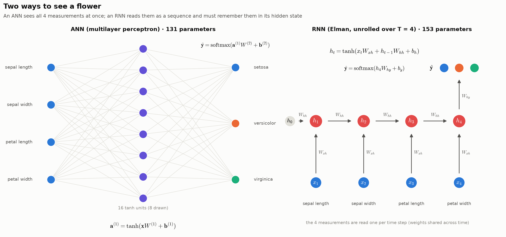
Two ways to see a flower. The ANN maps all four measurements at once; the RNN reads them one per time step and must carry what it has seen in its hidden state.
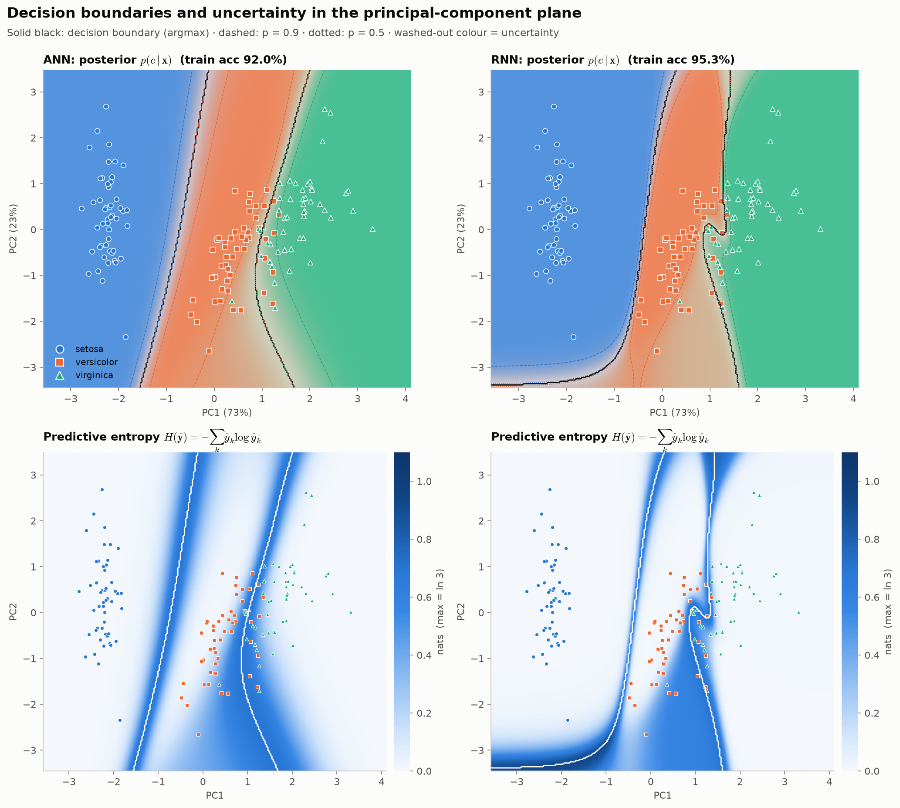
Posterior and predictive entropy in the PCA plane. Colour is mixed by class probability, so uncertain regions look washed out; the lower row shows \(H(\hat{\mathbf y})=-\sum_k \hat y_k\log\hat y_k\).
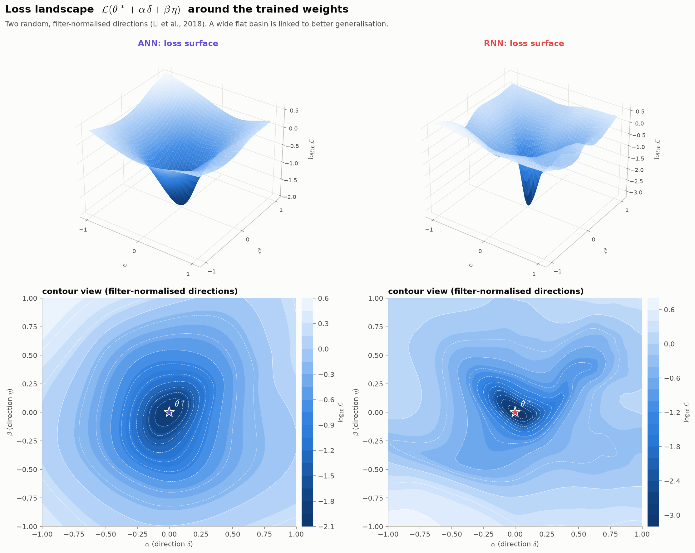
Loss landscapes \(\mathcal L(\theta^*+\alpha\delta+\beta\eta)\) along two filter-normalised random directions. The ANN sits in a broad, smooth basin; the RNN's minimum is sharper and the surface more irregular.
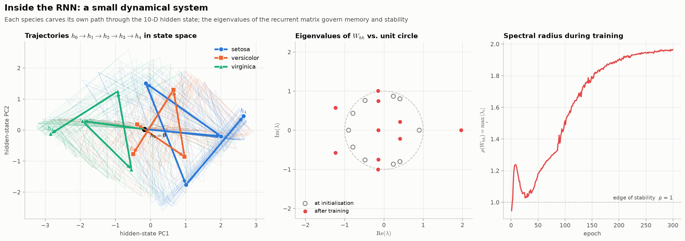
The RNN as a dynamical system: hidden-state trajectories, eigenvalues of \(W_{hh}\) relative to the unit circle, and the spectral radius during training.
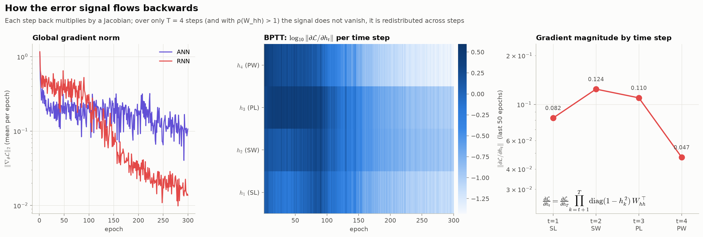
Backpropagation through time: the gradient magnitude \(\lVert\partial\mathcal L/\partial h_t\rVert\) reaching each time step, over training.
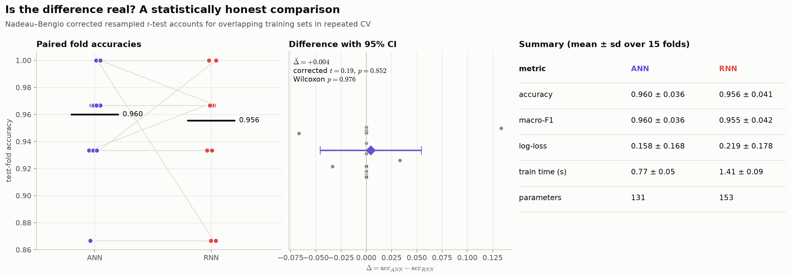
A statistically honest comparison: paired fold accuracies, the distribution of differences and its corrected confidence interval.
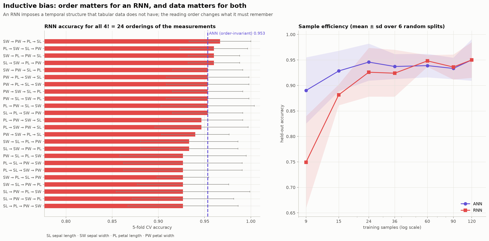
Inductive bias: RNN accuracy for all 4! reading orders, and accuracy against training-set size.
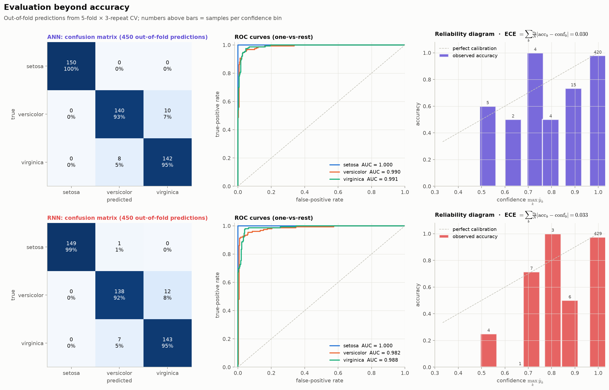
Beyond accuracy: confusion matrices, one-vs-rest ROC curves and reliability diagrams from 450 out-of-fold predictions.
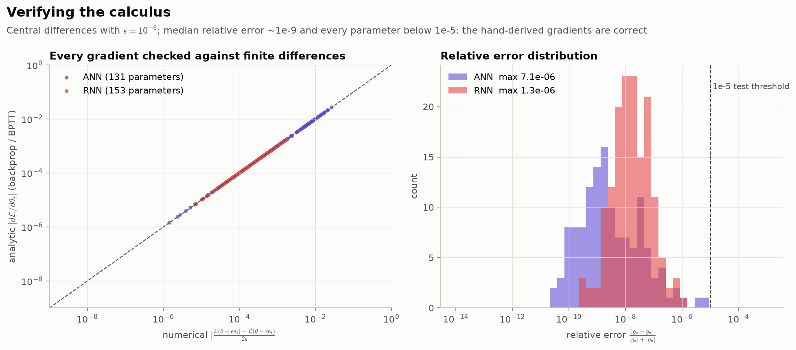
Verifying the calculus: every analytic gradient against its central finite difference.
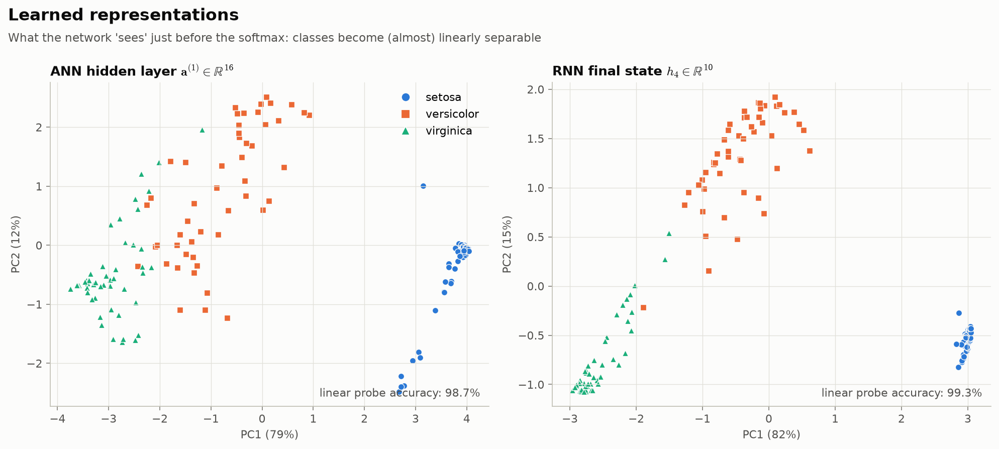
Learned representations just before the softmax, with linear-probe accuracy.
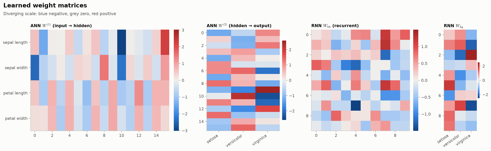
Learned weight matrices on a diverging scale.
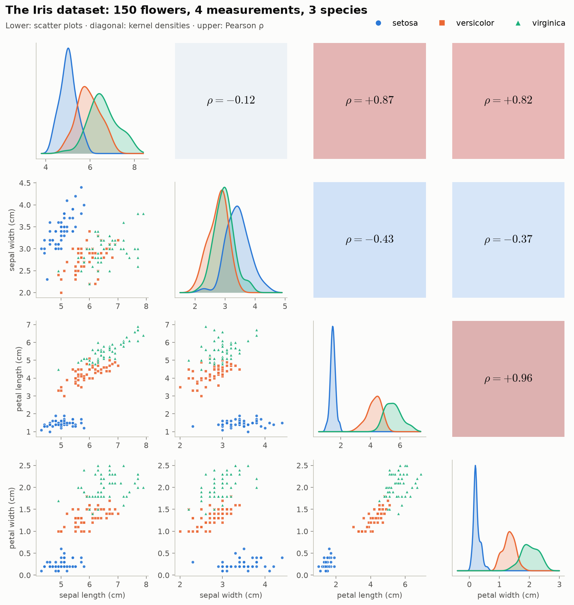
The data: scatter matrix, class-conditional densities and correlations.
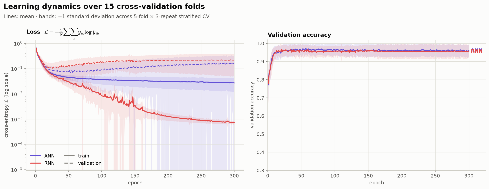
Learning dynamics: mean ± s.d. over 15 folds.
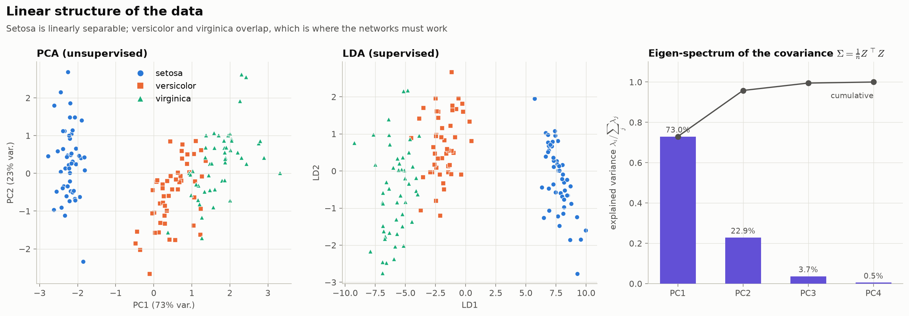
Linear structure: PCA, LDA and the eigen-spectrum of the covariance matrix.
The mathematics
Exactly what src/irisnet/models.py implements, using the row-vector convention with a mini-batch of \(N\) samples.
Drag to rotate, scroll to zoom. For training your own models live, open the Streamlit demo.
3-D loss surfaces of the trained ANN and RNN (log scale).
Every flower's path \(h_0\to h_4\) through the RNN's hidden state, projected onto three principal components.
The raw data: petal length, petal width and sepal length.
Source code
The full implementation, notebook and trained weights are kept in a private repository. Access is available on request to professors, reviewers and collaborators via LinkedIn or GitHub.